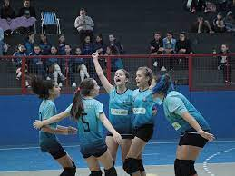

O JEPS é uma competição que reúne estudantes-atletas de todo o estado e promete agitar o cenário esportivo paranaense nos próximos dias. Os jogos serão divididos em três etapas regionais, sendo a primeira delas realizada entre os dias 5 e 10 de maio. A Regional de Curitiba acontecerá entre os dias 11 e 21 de maio, enquanto a terceira, a Regional 2, será realizada entre os dias 19 e 24 de maio. Estudantes de diversas modalidades esportivas terão a oportunidade de competir, se divertir e mostrar todo o seu talento nas quadras e campos do estado
Além de descobrir novos talentos para o esporte, o objetivo dos Jogos Escolares é promover, por meio da prática esportiva, a integração e o intercâmbio dos alunos para ampliar as oportunidades de socialização e aquisição de hábitos saudáveis.
Também muitas pessoas no JEPS são reconhecidas e são chamadas para jogar profissionalmente em algum time.
Não é permitido, o adolecente não pode estar com menos de 75% de presença escolar, é nem ser de outra escola, todos devem ser da mesma escola
JEPS são para adolecentees de uma so escola e cidade, entre a idade de 12 a 14, é 15 a 17, enquanto no JOJUPS voçê ja pode estar chamando adolecentees de outras cidades e escolas, é os adolecentes podem ter a idade entre 14 é 17 anos, podendo 2 adolecentes de 18 anos.
.clone()
O .clone é um métodoque executa uma cópia
profunda do conjunto de elementos HTML determinado, oque
significa que ele copia os elementos indicados e todos os
elementos de seus descendentes e nós de texto.